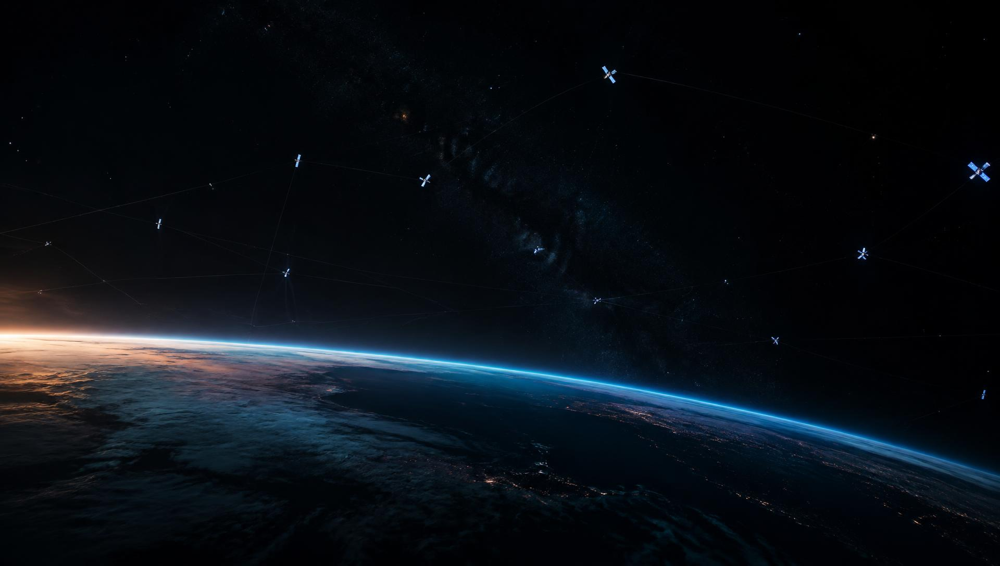
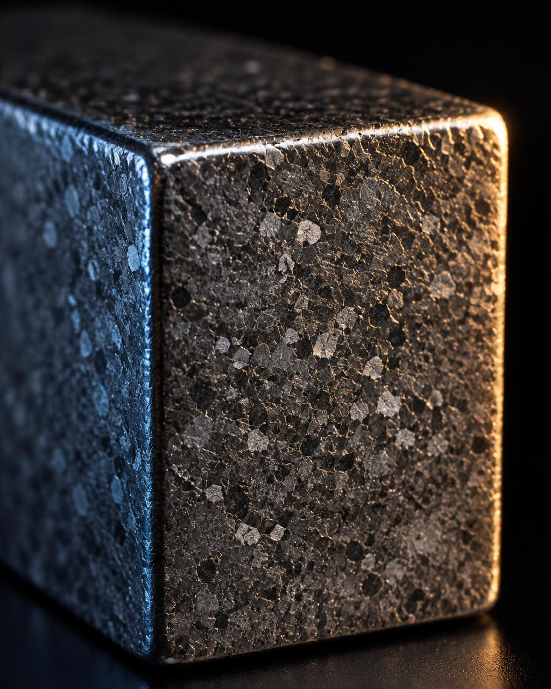

Decisions beyond
the ground.
Onboard reasoning, mission planning, and the role of human oversight when communication is limited.

Artificial Intelligence · Space Technology
Intelligent systems. Purposeful hardware.
A perspective beyond Earth.
The NRAI perspective
01 — FocusSoftware, spacecraft, and the materials behind them belong in the same conversation. NRAI brings artificial intelligence, space technology, and rare earth magnetics into focus.
Exploring intelligent decision-making for systems operating far from the ground.
02Turning Earth observation data into useful perspectives on a changing planet.
03Connecting telemetry, analysis, and human judgment throughout a mission.
04Understanding the magnetic materials behind motion, control, and precision.
Artificial Intelligence
02 — IntelligenceThe next frontier calls for systems that can make sense of complexity. Our AI focus connects autonomous decisions, Earth observation, and the people responsible for the mission.
Explore an AI collaborationOnboard reasoning, mission planning, and the role of human oversight when communication is limited.
Image analysis and data prioritization for understanding patterns in Earth observation.
Telemetry analysis, anomaly detection, and decision support for teams navigating complex operations.
Space Technology
03 — EngineeringA mission is a connected system: materials, motion, communications, and software. We look at how these disciplines fit together, from the first design question to the operating environment.
Rare earth materials and their place in magnetic assemblies, actuators, and sensing applications.
Explore magneticsThe relationship between orientation, momentum, and the hardware that supports a mission.
The data and communication links that connect spacecraft activity with people on Earth.
Materials · Magnetics
Rare earth magnets sit at the intersection of materials science and precision engineering. From neodymium to samarium cobalt, the right choice begins with the demands of the application.
Talk with us about your magnetic material requirements, operating environment, and intended use.
Discuss your requirements
Start a conversation
04 — Contact